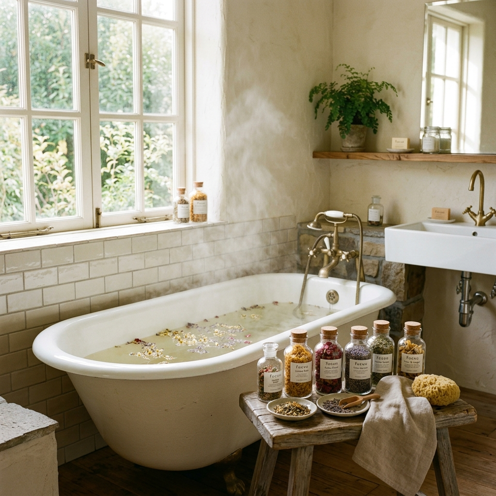
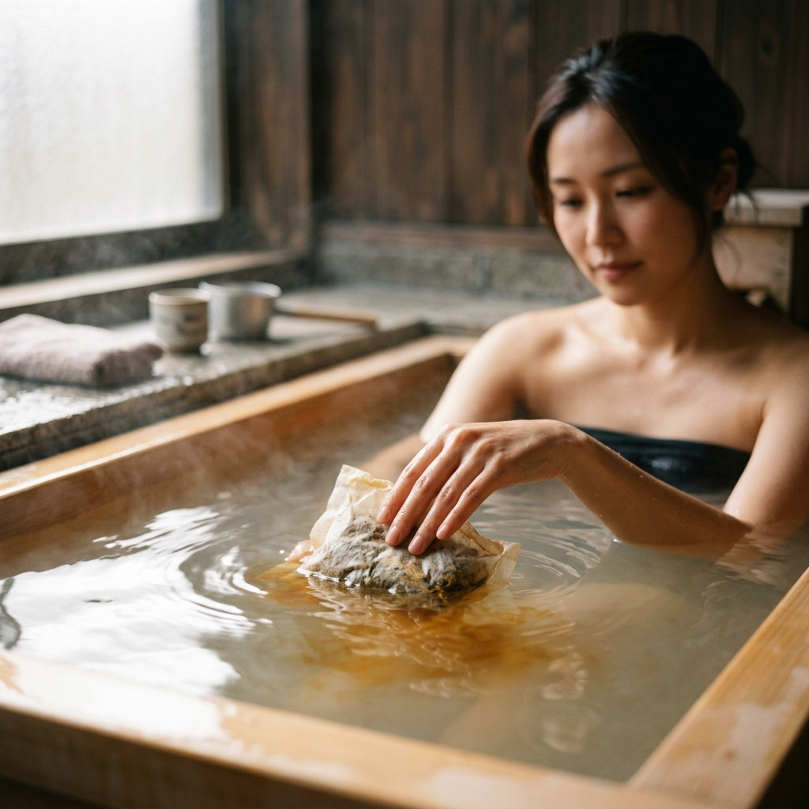

心も体もほどけていく。忙しい毎日に寄り添う「生薬入浴剤」で始める、私を整える養生時間
2026.04.27

忙しく過ぎ去る毎日の中で、ふと立ち止まり、自分の心と体の声に耳を傾ける時間はありますか？
外の世界に合わせた自分を脱ぎ捨てて、本来の「わたし」へと還っていく。そんな大切なひとときを、fucuu（フクウ）は植物のちからを借りて提案しています。
「なんとなく体が重い」「手足の冷えが気になる」「寝つきが悪い」。こうした小さな不調は、体が発しているSOSかもしれません。東洋の知恵である「養生」の考え方を取り入れ、毎日の入浴を単なる習慣から、自分を慈しむ「セルフケア」へと変えてみませんか？
今回は、生薬入浴剤が生み出す温活の魅力と、心身を整えるための具体的な方法についてお伝えします。
現代を生きる私たちは、空調による温度差やデジタルデバイスによる緊張、そして絶え間ないストレスにさらされています。こうした環境は自律神経を乱し、血行不良や「冷え」を引き起こす原因となります。
そこで注目したいのが「生薬（しょうやく）」のちからです。生薬とは、植物の根、茎、葉、果実などを乾燥させ、その薬効成分をそのまま活かしたもののこと。化学的に合成された成分とは異なり、自然のバランスを保ったまま私たちの体に働きかけてくれます。
fucuuの生薬入浴剤は、古くから伝えられる植物を厳選し、独自にブレンドしています。お湯に浸かることで、生薬の成分が肌から浸透し、さらに湯気とともに立ち上がる香りが鼻を通じて脳へと届きます。
「巡り」が良くなるということは、単に体が温まるだけではありません。滞っていたエネルギーが動き出し、心の中に溜まっていたわだかまりも少しずつ溶け出していく。そんな感覚を味わえるのが、生薬入浴剤の素晴らしいところです。
「温活」において最も大切なのは、体の表面だけでなく、内側の「芯」から温めることです。ただ熱いお湯に短時間浸かるだけでは、かえって心臓に負担をかけ、交感神経を刺激してリラックスを妨げてしまうこともあります。
理想的なのは、38度から40度程度の少しぬるめのお湯に、15分から20分かけてゆっくりと浸かること。この「ゆっくり」という時間が、副交感神経を優位にし、深いリラックス状態へと導いてくれます。
fucuuが大切にしているのは、この時間に寄り添う「国産アロマ」の存在です。日本人に馴染み深い和柑橘や森の香りをベースにした香料は、100%天然の精油のみを使用しています。
生薬の力強い大地の香りと、繊細なアロマが織りなすハーモニーは、呼吸を深くし、凝り固まった思考をほどいてくれます。お湯の中で自分の呼吸に意識を向け、ただ「今、ここにいる自分」を感じる。それこそが、fucuuが考える最高の養生です。
セルフケアは、自分を大切に想う気持ちから始まります。だからこそ、体に直接触れるものには一切の妥協をしたくない。fucuuはそう考えています。
市販の入浴剤には、色鮮やかな着色料や合成香料が使われていることも少なくありません。しかし、私たちが目指したのは、植物が持つ本来の生命力をそのままお届けすること。そのため、fucuuのプロダクトは完全無添加にこだわりました。
保存料も、人工的な香りも使いません。そこにあるのは、大地が育んだ生薬と、日本の豊かな森や果樹園から抽出された精油だけ。お湯に溶け出した琥珀色は、植物たちが懸命に生きてきた証です。
安心できる素材に包まれることで、心は自然と「フクフク」とした幸福感で満たされていきます。自分へのご褒美として、あるいは大切な誰かの体をいたわるギフトとして。混じりけのない優しさが、明日への活力を養ってくれます。
養生とは、決して特別なことではありません。毎日の生活の中に、自分を慈しむ小さな「余白」を作ること。
その余白を、温かなお湯と植物の香りで満たしてあげるだけで、心と体は驚くほど軽くなります。
fucuuの生薬入浴剤は、あなたの「帰る場所」でありたいと願っています。忙しい一日を終え、心身をリセットして、また新しい明日を自分らしく迎えるための儀式。植物のちからで、フクフクとした幸せがあなたの中に広がりますように。
今夜は少しだけ早くお風呂を沸かして、深呼吸をしてみませんか？
「おかえり、わたし」。そんな言葉が自然とこぼれるような、温かな時間があなたを待っています。
外の世界に合わせた自分を脱ぎ捨てて、本来の「わたし」へと還っていく。そんな大切なひとときを、fucuu（フクウ）は植物のちからを借りて提案しています。
「なんとなく体が重い」「手足の冷えが気になる」「寝つきが悪い」。こうした小さな不調は、体が発しているSOSかもしれません。東洋の知恵である「養生」の考え方を取り入れ、毎日の入浴を単なる習慣から、自分を慈しむ「セルフケア」へと変えてみませんか？
今回は、生薬入浴剤が生み出す温活の魅力と、心身を整えるための具体的な方法についてお伝えします。

1. なぜ「生薬」が今の私たちに必要なのか。自然のちからで巡りを整える
現代を生きる私たちは、空調による温度差やデジタルデバイスによる緊張、そして絶え間ないストレスにさらされています。こうした環境は自律神経を乱し、血行不良や「冷え」を引き起こす原因となります。
そこで注目したいのが「生薬（しょうやく）」のちからです。生薬とは、植物の根、茎、葉、果実などを乾燥させ、その薬効成分をそのまま活かしたもののこと。化学的に合成された成分とは異なり、自然のバランスを保ったまま私たちの体に働きかけてくれます。
fucuuの生薬入浴剤は、古くから伝えられる植物を厳選し、独自にブレンドしています。お湯に浸かることで、生薬の成分が肌から浸透し、さらに湯気とともに立ち上がる香りが鼻を通じて脳へと届きます。
「巡り」が良くなるということは、単に体が温まるだけではありません。滞っていたエネルギーが動き出し、心の中に溜まっていたわだかまりも少しずつ溶け出していく。そんな感覚を味わえるのが、生薬入浴剤の素晴らしいところです。
2. 芯から温まり、心を解放する。温活の基本と入浴の極意
「温活」において最も大切なのは、体の表面だけでなく、内側の「芯」から温めることです。ただ熱いお湯に短時間浸かるだけでは、かえって心臓に負担をかけ、交感神経を刺激してリラックスを妨げてしまうこともあります。
理想的なのは、38度から40度程度の少しぬるめのお湯に、15分から20分かけてゆっくりと浸かること。この「ゆっくり」という時間が、副交感神経を優位にし、深いリラックス状態へと導いてくれます。
fucuuが大切にしているのは、この時間に寄り添う「国産アロマ」の存在です。日本人に馴染み深い和柑橘や森の香りをベースにした香料は、100%天然の精油のみを使用しています。
生薬の力強い大地の香りと、繊細なアロマが織りなすハーモニーは、呼吸を深くし、凝り固まった思考をほどいてくれます。お湯の中で自分の呼吸に意識を向け、ただ「今、ここにいる自分」を感じる。それこそが、fucuuが考える最高の養生です。

3. 「fucuu」が届ける、100%天然・無添加へのこだわり
セルフケアは、自分を大切に想う気持ちから始まります。だからこそ、体に直接触れるものには一切の妥協をしたくない。fucuuはそう考えています。
市販の入浴剤には、色鮮やかな着色料や合成香料が使われていることも少なくありません。しかし、私たちが目指したのは、植物が持つ本来の生命力をそのままお届けすること。そのため、fucuuのプロダクトは完全無添加にこだわりました。
保存料も、人工的な香りも使いません。そこにあるのは、大地が育んだ生薬と、日本の豊かな森や果樹園から抽出された精油だけ。お湯に溶け出した琥珀色は、植物たちが懸命に生きてきた証です。
安心できる素材に包まれることで、心は自然と「フクフク」とした幸福感で満たされていきます。自分へのご褒美として、あるいは大切な誰かの体をいたわるギフトとして。混じりけのない優しさが、明日への活力を養ってくれます。
Tips: わたしを整えるバスタイム・ルーティン
1. 入浴前のコップ一杯の白湯： 体内から温める準備を整え、発汗を促します。
2. 照明を落として： キャンドルや間接照明のみで、目からの刺激を最小限に。脳を休息モードへ切り替えます。
3. 生薬パックを優しく揉む： お湯の中でパックを優しく揉むと、成分と香りがさらに広がります。その感触も楽しみましょう。
4. デジタルデトックス： スマホは脱衣所に置いて。15分間、自分だけの静寂を楽しみます。
5. 入浴後はすぐに保湿と靴下： 温まった熱を逃がさないよう、5分以内にケアを行いましょう。
まとめ：明日も軽やかに、私らしくあるために
養生とは、決して特別なことではありません。毎日の生活の中に、自分を慈しむ小さな「余白」を作ること。
その余白を、温かなお湯と植物の香りで満たしてあげるだけで、心と体は驚くほど軽くなります。
fucuuの生薬入浴剤は、あなたの「帰る場所」でありたいと願っています。忙しい一日を終え、心身をリセットして、また新しい明日を自分らしく迎えるための儀式。植物のちからで、フクフクとした幸せがあなたの中に広がりますように。
今夜は少しだけ早くお風呂を沸かして、深呼吸をしてみませんか？
「おかえり、わたし」。そんな言葉が自然とこぼれるような、温かな時間があなたを待っています。
fucuuの生薬入浴剤・国産アロマは、BASEオンラインショップでご購入いただけます。
BASEで購入する